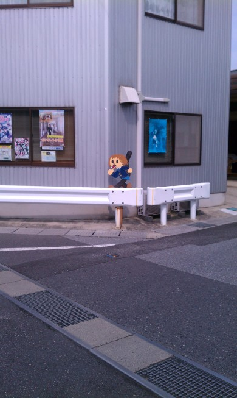
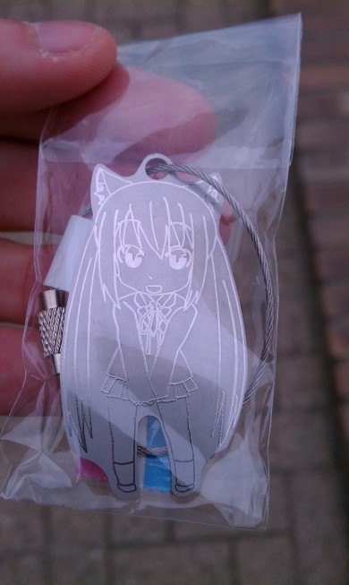
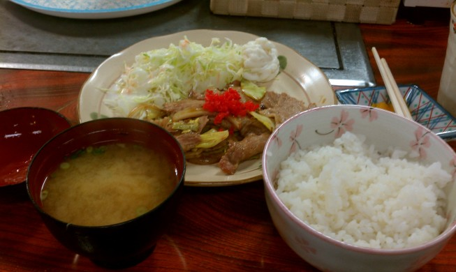

滋賀・福井旅行記(2013/03/12-2013/03/16)
その1 の続き．
03/13
朝8:30頃に目覚めて，9時に宿を出る． 目標は豊郷小学校訪問と，琵琶湖を見に行くこと．
豊郷小学校について事前に 今日の部室 というサイトで調べたところ，近江鉄道はフリーきっぷがあるとのこと． 駅でフリーきっぷを買ってから時刻表を確かめると，次の電車まで15分しかなくその次が30分後だったので，ちゃんとした食事は豊郷で取ることにしてコンビニでおにぎりだけ買う．
……が，電車内でニンジャスレイヤーの更新分を読んでたら分岐点で乗り換えそびれて，多賀大社の方へ運ばれてしまった． まあ時間は余裕があるし，折角なので多賀大社に参拝しにいく．
多賀大社．
入り口のところには謎の橋があった（別の神社でも同じようなのを見た気がする）．
そのあと神社前の茶店で糸切餅というのを食べた．
まあ普通にこしあんが求肥で包まれたもので，味は普通だった．
駅に戻ってきて，今度こそ豊郷へ．
駅を出る前からはっちゃけた雰囲気の案内図があって，変な笑いが出てくる．
駅を出た途端に，唯とムギの飛び出し坊や（飛び出しJKと言うらしい？）を発見．

ちょっと先には澪も．
あずにゃんはもっと遠くに行かないとないっぽいので，豊郷小学校に行く前にあずにゃん回収に向かう． 至るところにノボリが立ってるんだけど，これもまた萌え擬人化されている．
しばらく歩いてあずにゃん発見．
地図で見ると近そうにみえるけど，1ブロックが意外と大きいので思ったよりも歩く距離が長い……．
あずにゃんの飛び出しJKを回収したので，今度は小学校へ．
こ，これはどう見ても桜ヶ丘高校ですね……！ 写真では何回も見ていたので知識としては知っていたものの，実際に見ると本当にそっくりそのままで不思議な感動がある．
校長先生の像（校長じゃないけど）．
手すりには兎と亀が．
こ，ここは！
部室だ！！！
部室はサンプルのケーキセットとベンチがアニメの配置で置いてあって，他に隅っこにはけいおんグッズ集積所が形成されていた．

なぜかなのはのサイン入り色紙（これThe movie 2nd A’sの特典だっけ）． 真田アサミつながりらしい．
アニメで何回も出てくる，階段を降りきった所の廊下．

軽音部のみんなが今にも歩いてきそう．
校舎を見たあとで，売店に行ってあずにゃんキーホルダーを購入．

そのあとはまっすぐ駅へ戻る． 小学校前の純は車がぶつかったのか，壊れてしまっていた……．
途中でミクとこなたを見つけた．そういうのもあるのね．

駅に戻ってから，律の飛び出しJKを撮ってないことに気づく． どうも駅の反対側にあるらしい． 時間はまだ大丈夫なので，回収に向かう．
無事回収． これ書いてるときに気づいたけど，そういえば憂とスミーレを撮ってない……．
電車に乗って彦根へ戻る． 結局ロクに食事をしないまま13時になってしまい，このままではまずいと思ったので彦根駅前で適当に店を探す．

生姜焼き定食．おいしかった．
次は琵琶湖． 駅前からシャトルバスが出ているらしいので，それに乗る．
琵琶湖の彦根港についた． フェリーも出ていたけど，往復3000+α円とちょっと高いので諦め……．
彦根港周辺は何もなくて面白くないので，レンタサイクルにしとけばよかったかなーと思いつつ適当にほっつき歩き，そのまま駅まで戻ってくる． で，福井方面に行く電車を調べたところ，次は2時間後……． 歩き疲れてたところだし，駅前のマクドナルドでコードを書いて時間を潰す．
16:48分発の北陸本線で出発． 湖北に差し掛かったところで気温が下がってきたのを感じた．
Haskellのエラーハンドリングについて調べたり寝たりしているうちに敦賀に到着． 乗り換えて武生へ． 武生についた時点で激しく雨が降っていて，駅の写真も取れなかった．
とりあえず一番近い大江戸という店に入り，ボルガライスを食べる．
大江戸のボルガライス． オーソドックスなチキンライスのオムライスに，カツが乗ってデミグラスソースがかかっている． 味は正直普通な感じだった．カツがちょっと小さい……．
雨が強くて折畳み傘で歩きまわるのは厳しいので（折畳み傘でなくても歩きたくないくらいだったが），そのまま電車を待ち，福井へ．
宿に着いたら荷物を置いて居酒屋に行った． ホテル近くの「ひっぱり凧」というところ．
ブリの造り． あとはお通しの大根の煮付けとなす田楽を食べ，越前岬の熱燗を2合飲んだ．
日本酒の銘柄を聞いたら店主のおっちゃんに県外からですかと聞かれて，東京から来た大学生だと答えたら国内旅行は珍しいですねと言われた． 確かに海外旅行の方がむしろ普通なのかもしれない． あと，店主のおっちゃんは普通に東工大を知っていた．
その3へ続く ．